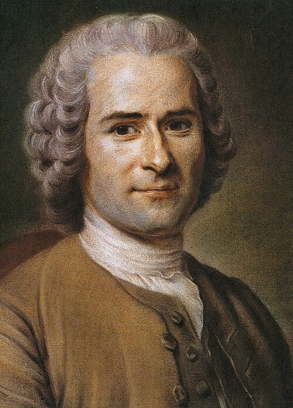
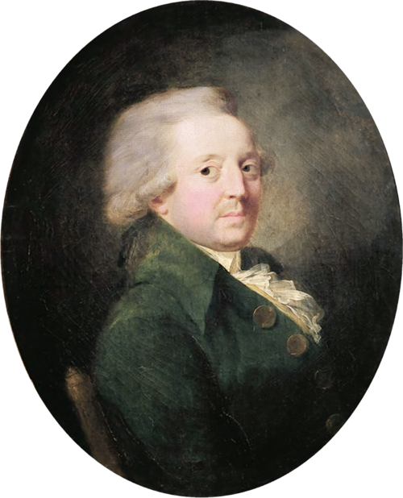
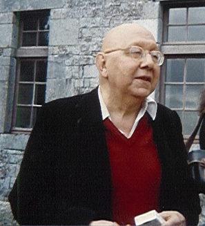
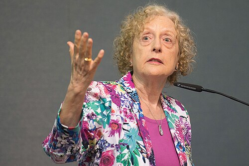

Participation
Consultation, délibération et décision ne donnent pas le même pouvoir. Il faut regarder qui fixe l’ordre du jour et quelles suites sont données aux propositions.
COURANT TRANSVERSAL
Démarches qui placent la transformation des institutions et l’intervention directe des citoyens au premier plan : référendum d’initiative citoyenne, assemblée constituante ou participation hors des partis traditionnels. Ce repère institutionnel ne détermine pas à lui seul une position de gauche ou de droite sur l’économie.
Urne et bulletinL’intervention des citoyens dans les décisions collectives. Symbole éditorial, sans valeur d’emblème officiel.
LA QUESTION CENTRALE
Consultation, délibération et décision ne donnent pas le même pouvoir. Il faut regarder qui fixe l’ordre du jour et quelles suites sont données aux propositions.
Un processus constituant vise les règles fondamentales ; son mode de désignation, son mandat et ses garanties doivent être précisés.
La décision majoritaire doit être articulée à la protection des libertés et des minorités. « Le peuple décide » ne répond pas, à lui seul, à toutes les questions démocratiques.
ORIGINES ET TRANSFORMATIONS
Carole Pateman interroge la place de la participation dans la vie démocratique et ses effets sur la capacité des citoyens à agir. Bernard Manin montre de son côté que le gouvernement représentatif repose sur une histoire et des mécanismes distincts de la démocratie directe.
Notre repère rassemble des candidatures qui placent les institutions ou la participation citoyenne au premier plan. Il ne les rend pas identiques : une candidature indépendante des partis, un référendum d’initiative citoyenne et une assemblée constituante sont trois démarches différentes.
DES INFLUENCES À DISTINGUER
Les traditions jacobine et libertaire distinguées par Julliard peuvent se rencontrer sur la souveraineté populaire et s’opposer sur la centralisation ou les moyens de l’émancipation.

Légitimité de la décision collective et souveraineté populaire ; ces principes ne fournissent pas, à eux seuls, un modèle opérationnel de référendum moderne.
Éclairage complémentaire : Philippe Nemo et les chapitres indiqués ci-dessous.
Noir et blanc et cadrage appliqués à l’affichage ; les fichiers sources sont conservés sans modification.

Réflexion sur les décisions collectives, l’instruction et l’égalité des droits ; une référence de la tradition républicaine et de la discussion démocratique.
Noir et blanc et cadrage appliqués à l’affichage ; les fichiers sources sont conservés sans modification.

Autonomie : une société peut discuter les institutions qu’elle se donne au lieu de les tenir pour intouchables.
Noir et blanc et cadrage appliqués à l’affichage ; les fichiers sources sont conservés sans modification.

La participation peut former les capacités démocratiques des citoyens, y compris au-delà du seul moment électoral.
Noir et blanc et cadrage appliqués à l’affichage ; les fichiers sources sont conservés sans modification.
Représentation, participation, délibération et démocratie directe ne sont pas une seule procédure. Une invocation du peuple ne suffit jamais à garantir les droits et le pluralisme.
Comparer souveraineté populaire et limitation du pouvoir. La participation ne remplace pas à elle seule les garanties des droits ; les débats historiques doivent être complétés par Manin et Pateman sur la représentation et la participation contemporaines.
Philippe Nemo, Histoire des idées politiques aux Temps modernes et contemporains, PUF, « Quadrige », 2013 [2002]. Référence complète et périmètre de consultation.
Ces renvois identifient les chapitres utiles. Les extraits accessibles et le sommaire ont été consultés ; ils ne constituent pas une lecture intégrale de l’ouvrage. Cette perspective est croisée avec les autres références du dossier.
DES IDÉES AUX ORGANISATIONS
0 formation dans notre annuaire non exhaustif. Ce rattachement principal ne résume pas toute la diversité interne d’un parti.
Aucun parti de l’annuaire n’est rattaché à ce repère. Cela ne permet pas de conclure à l’absence d’autres organisations.
Explorer l’annuaire des partis avec ce filtre →PRÉSIDENTIELLE 2027
Le classement personnel est expliqué dans chaque profil. Il peut différer de celui d’un parti ; une ancienne affiliation ne suffit pas à le déterminer.

Solution démocratique
Professeure de sciences politiques à l’université de Rotterdam, elle porte la candidature de Solution démocratique.
Profil et programme · ébauche →
Sans étiquette
Ingénieur en agroalimentaire de formation devenu enseignant contractuel, il entreprend un tour de France à vélo pour rencontrer des maires et recueillir des parrainages.
Profil et programme · ébauche →Trajectoire
Jeune candidat habitant Montreuil, il sillonne la France en van pour solliciter les parrainages d’élus.
Profil et programme · ébauche →Cette sélection s’inscrit dans une bibliographie plus large. Les notices précisent ce qui a été consulté et ce que chaque référence apporte ; aucune filiation personnelle n’est déduite d’un seul rapprochement historique.
Méthode et bibliographie complète →